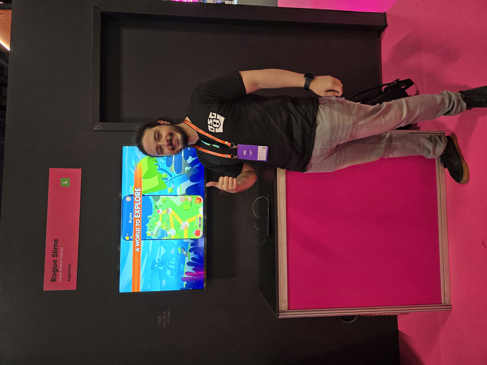

Game Developer

I’m a game developer with over 8 years of experience across AAA-scale mobile production, hypercasual development, and indie game creation. This range allows me to understand how games are built and operated at every level, from rapid iteration to large-scale production environments.
I specialize in fast prototyping and systems-driven design, with a strong focus on turning simple or even uninteresting ideas into engaging and fun gameplay experiences. My approach is always player-first: every mechanic is shaped around decision-making, feedback, and long-term engagement.
I’m deeply passionate about games, not just building them, but playing and analyzing them. I constantly explore new titles, genres, and even board games to expand my perspective and fuel new ideas on how to create better and more enjoyable experiences.
Currently, I’m co-founder of Quest Seeker Games and the creator of Rogue Slime, a roguelite that reached over 500k organic downloads on mobile. We are also actively developing the PC version, with a demo available on Steam.
My first professional experience, where I learned how large-scale game development operates within an AAA mobile production environment. I gained a deep understanding of team structure, task ownership, and how responsibilities are distributed across multidisciplinary teams.
During this time, I significantly improved my programming skills and learned how to build features in a way that is scalable, maintainable, and aligned with team workflows. I also developed strong collaboration and communication skills, working closely with Live Ops, Art, and QA teams.
I became familiar with the full update lifecycle, understanding how features move from concept to release, and how to iterate efficiently in a production environment.
At this stage, I transitioned into a highly fast-paced environment where speed, iteration, and market validation were the top priorities. I focused on rapid prototyping of gameplay mechanics, learning how to quickly test ideas and validate them through real player data.
I developed a strong mindset around failing fast and iterating efficiently, understanding when to move forward, when to pivot, and when to let go of a project. Over time, I contributed to the development of 70+ hypercasual prototypes, with 5+ approaching soft launch and 2 becoming successful titles, including Claw Builder and Dino Run.
This experience helped me grow into a more independent and proactive developer, optimizing my workflow and consistently seeking new ideas. I also gained valuable insight into publisher communication and learned how to take projects forward within a performance-driven environment.
As co-founder of Quest Seeker Games, I stepped into a full ownership role, taking responsibility not only for development but for the entire product. This experience pushed me to work across multiple disciplines, including game design, programming, marketing, community management, art direction, animation, audio, and content creation.
I learned firsthand what it takes to build and sustain a game as an indie team — making decisions with limited resources, prioritizing effectively, and constantly adapting. This required a high level of versatility, problem-solving, and ownership across every stage of development.
As the creator of Rogue Slime, I helped grow the game to 500k+ organic downloads on mobile, supported by an active and engaged community. We are currently working on bringing the game to PC, gaining experience with the full Steam release pipeline while developing and polishing the port.
I enjoy participating in game jams to experiment with new ideas, explore mechanics, and push rapid prototyping to its limits.